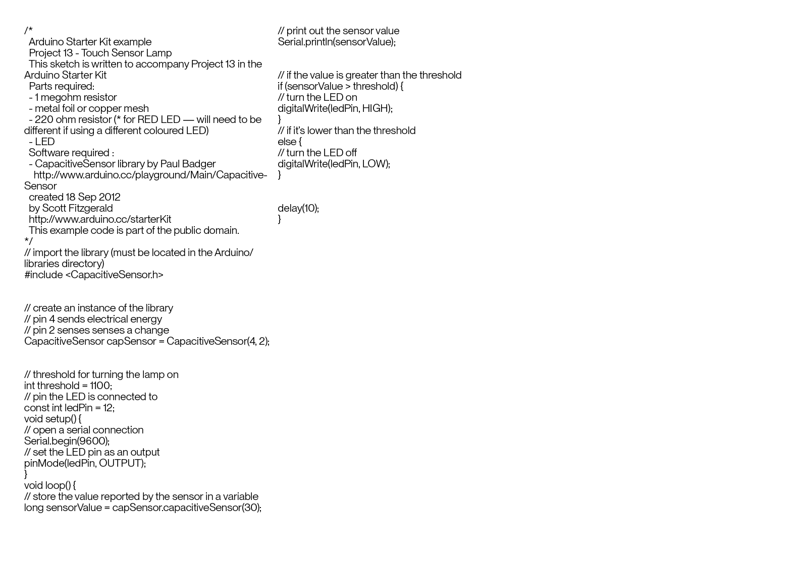
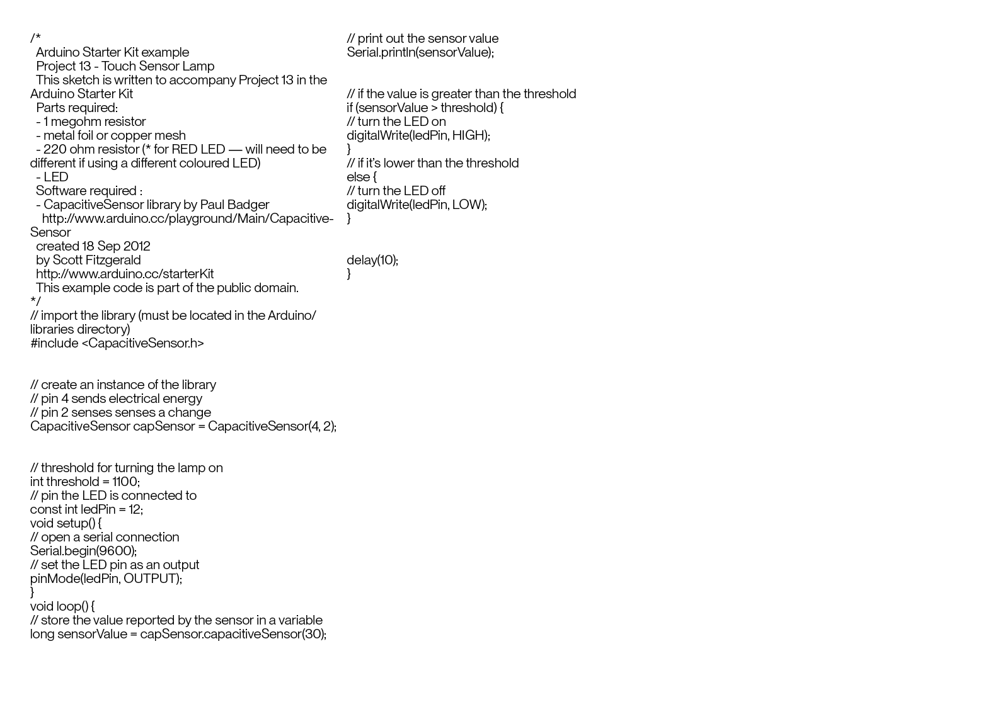

This time I was able to copy the code into this page, so this time you can easily paste this into your own Arduino sketch. Don't forget to reset, and upload your code to the Arduino using Arduino Uno specfically.
Again, we merely have a screenshot of the code as the placeholder technique is failing me here..
 
